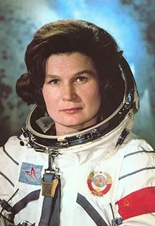
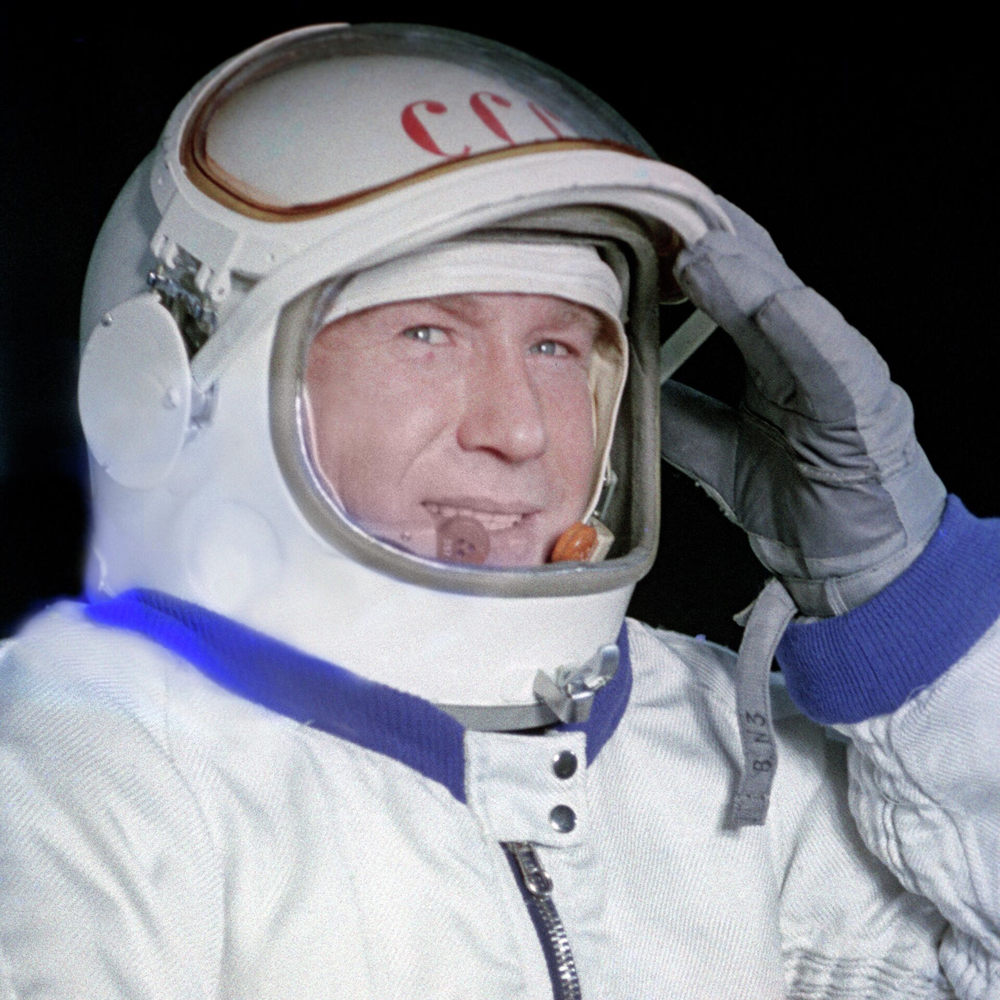
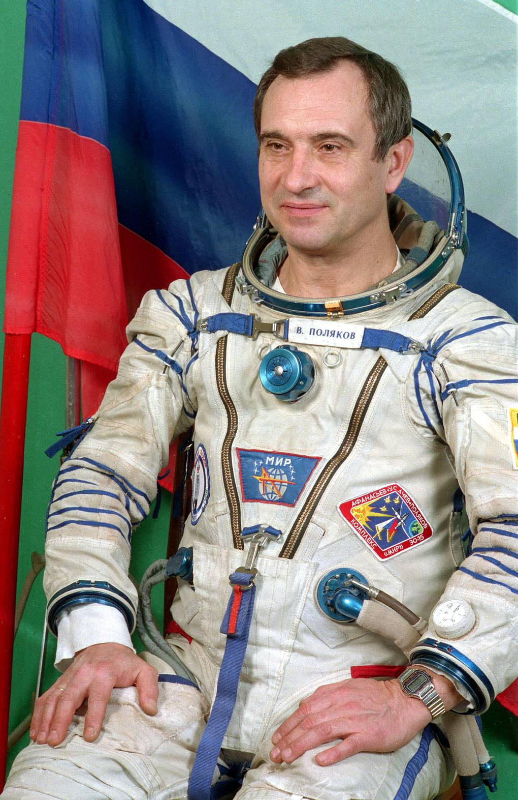
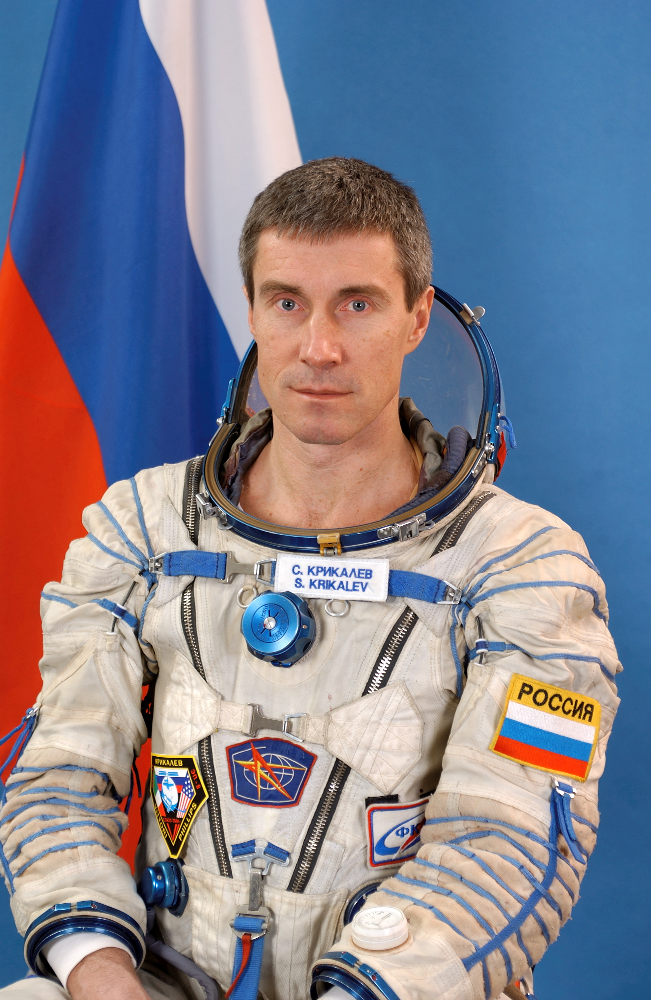
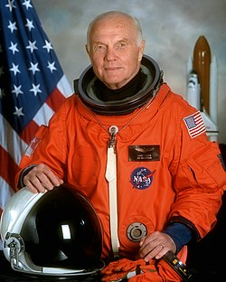
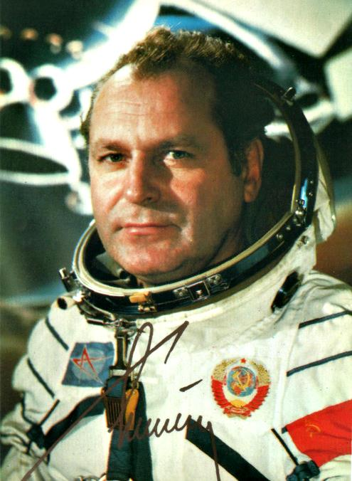
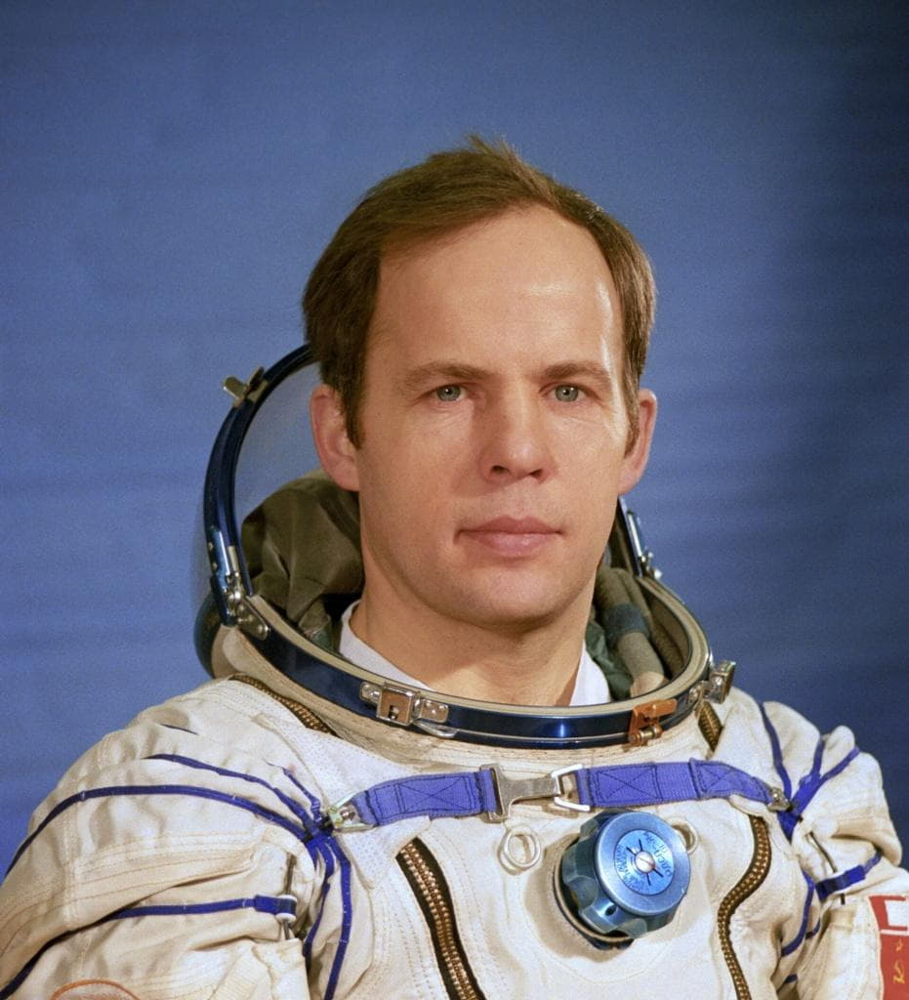
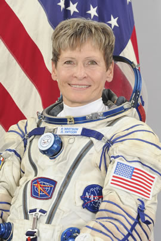

|
Космические рекорды человечества
|
| Космонавт/Астронавт |
Страна |
Достижение (Рекорд) |
Дата |
Значение рекорда |
Изображение |
Подробнее |
Юрий Гагарин |
СССР |
Первый человек в космосе |
12.04.1961 |
108 минут полёта |
|
Подробнее: Гагарин |
Валентина Терешкова |
СССР |
Первая женщина в космосе |
16.06.1963 |
2 суток 22 часа 50 минут |

|
Подробнее: Терешкова |
Алексей Леонов |
СССР |
Первый выход в открытый космос |
18.03.1965 |
12 минут в открытом космосе |

|
Подробнее: Леонов |
Валерий Поляков |
Россия |
Самый длительный непрерывный полёт |
08.01.1994 - 22.03.1995 |
437 суток 18 часов |

|
Подробнее: Поляков |
Сергей Крикалёв |
Россия |
Суммарная продолжительность полётов |
1988-2005 |
803 суток 9 часов 39 минут |

|
Подробнее: Крикалёв |
Джон Гленн |
США |
Самый возрастной космонавт |
29.10.1998 |
77 лет |

|
Подробнее: Гленн |
Герман Титов |
СССР |
Самый молодой космонавт |
06.08.1961 |
25 лет 10 месяцев 26 дней |

|
Подробнее: Титов |
Анатолий Соловьев |
Россия |
Больше всего выходов в космос |
1988-1997 |
16 выходов (82 часа) |

|
Подробнее: Соловьев |
Пегги Уитсон |
США |
Рекорд среди женщин по продолжительности |
2002-2017 |
665 суток |

|
Подробнее: Уитсон |
Нил Армстронг |
США |
Первая высадка на Луне |
20.07.1969 |
2 часа 31 минута на поверхности |

|
Подробнее: Армстронг
|